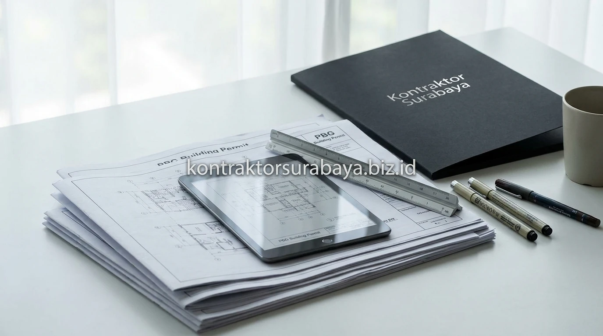

Memulai proyek pembangunan gedung perkantoran, ruko bertingkat, gudang industri, hingga fasilitas komersial di kota Surabaya menuntut kepatuhan terhadap regulasi tata ruang yang ketat. Sejak diberlakukannya Undang-Undang Cipta Kerja dan Peraturan Pemerintah No. 16 Tahun 2021, instrumen izin mendirikan bangunan resmi bertransformasi dari IMB (Izin Mendirikan Bangunan) menjadi PBG (Persetujuan Bangunan Gedung).
Memahami alur pengurusan PBG melalui portal Sistem Informasi Manajemen Bangunan Gedung (SIMBG) adalah langkah mutlak bagi para pengembang properti dan pelaku usaha agar proyek fisik berjalan legal, aman dari sanksi penyegelan, serta siap memperoleh Sertifikat Laik Fungsi (SLF).
1. Peralihan dari IMB ke PBG dan Perbedaannya
PBG atau Persetujuan Bangunan Gedung menggantikan IMB dengan proses yang lebih menekankan pada pemeriksaan kesesuaian teknis bangunan terhadap standar keselamatan, keandalan struktur, dan tata ruang sebelum konstruksi dimulai.
Berbeda dengan sistem lama yang lebih berfokus pada aspek izin administratif semata, PBG mensyaratkan verifikasi teknis yang mendalam terhadap seluruh lembar dokumen perencanaan (arsitektur, struktur tahan gempa, dan sistem proteksi MEP). Selain itu, desain bangunan wajib selaras dengan Rencana Detail Tata Ruang (RDTR), Garis Sempadan Bangunan (GSB), Koefisien Dasar Bangunan (KDB), dan Koefisien Lantai Bangunan (KLB) yang berlaku di wilayah Surabaya.
2. Tahapan Awal Mengurus PBG Sebelum Konstruksi
Konsultasi rencana teknis, penyusunan dokumen rencana, pengecekan kesesuaian zonasi lahan, dan pengajuan permohonan resmi adalah empat tahapan awal yang perlu dilalui:
- Konsultasi Rencana Teknis: Dilakukan bersama tim arsitek dan konsultan struktur untuk memastikan rancangan awal memenuhi kaidah teknis keselamatan gedung di zona Surabaya.
- Penyusunan Dokumen DED Rencana: Mencakup gambar kerja detail arsitektur, gambar struktur pembesian, perhitungan beban mekanik, dan skema plumbing.
- Pengecekan Kesesuaian Zonasi Lahan (Keterangan Rencana Kota / KRK): Memastikan fungsi bangunan yang direncanakan (komersial, industri, atau hunian) sesuai dengan peruntukan lahan pada peta tata ruang kota.
- Pengajuan Permohonan Resmi Akun SIMBG: Mengunggah seluruh data legalitas tanah dan dokumen teknis ke portal resmi SIMBG untuk dijadwalkan verifikasi oleh dinas terkait.

3. Dokumen yang Diperlukan dalam Pengajuan PBG
Gambar rencana arsitektur, gambar rencana struktur, dokumen bukti kepemilikan lahan, dan surat pernyataan kesesuaian rencana adalah empat pilar dokumen utama:
- Gambar Rencana Arsitektur: Denah, tampak 4 sisi, potongan melintang/membujur, rencana tata letak tapak (site plan), dan perhitungan ventilasi/pencahayaan alami.
- Gambar & Perhitungan Struktur: Denah pondasi, denah penulangan kolom/balok, laporan penyelidikan tanah (soil test / sondir), dan nota kalkulasi struktur terhadap gempa.
- Dokumen Bukti Kepemilikan Lahan: Sertifikat Hak Milik (SHM) / Hak Guna Bangunan (HGB), bukti lunas PBB terbaru, dan identitas resmi pemohon.
- Surat Pernyataan Kesesuaian Teknis: Dokumen komitmen keabsahan gambar yang ditandatangani oleh perencana berlisensi arsitek (STRA) dan ahli teknik sipil (SKA/SKK).
4. Bagaimana Proses Verifikasi dan Penerbitan PBG Berlangsung?
Petugas teknis dan Tim Ahli Bangunan Gedung (TABG) memeriksa kesesuaian dokumen yang diajukan dengan ketentuan tata ruang dan standar keselamatan bangunan, sebelum PBG diterbitkan sebagai dasar legal untuk memulai konstruksi fisik.
Proses verifikasi ini dapat melibatkan sidang konsultasi teknis, koreksi catatan gambar, atau permintaan klarifikasi perhitungan struktur apabila ditemukan ketidaksesuaian dengan peraturan daerah. Setelah dokumen disetujui, sistem akan menerbitkan Surat Ketetapan Retribusi Daerah (SKRD). Begitu retribusi dibayarkan, dokumen PBG resmi terbit dan pekerjaan fisik di lapangan dapat langsung dimulai secara legal.
5. Risiko Membangun Tanpa PBG yang Sah
Mengabaikan perizinan resmi sebelum memulai pengecoran gedung membawa konsekuensi hukum dan finansial yang sangat berat:
- Penyegelan dan Penghentian Proyek Fisik: Satpol PP dan Dinas Perumahan Rakyat Surabaya berwenang memasang garis segel dan menyetop aktivitas tukang di lokasi.
- Denda Administratif Berat: Dikenakan sanksi denda finansial hingga persentase tertentu dari total nilai bangunan yang sedang didirikan.
- Kendala Agunan Bank & Transaksi Properti: Bangunan tanpa PBG tidak dapat dijadikan jaminan perbankan, serta sulit disewakan kepada tenant korporasi besar.
- Gagal Memperoleh Sertifikat Laik Fungsi (SLF): Menghambat terbitnya izin operasional usaha komersial seperti izin hotel, restoran, klinik, atau pabrik.
6. Perbedaan Persyaratan PBG untuk Rumah Tinggal dan Gedung Komersial
Bangunan gedung komersial umumnya memerlukan kajian teknis tambahan seperti analisis dampak lalu lintas (Andalalin), dokumen lingkungan (AMDAL/UKL-UPL), dan sistem proteksi hidran kebakaran, sementara rumah tinggal memiliki persyaratan yang relatif lebih sederhana.
Skala dan fungsi bangunan menentukan tingkat kompleksitas dokumen perizinan. Gedung komersial dengan luas lantai di atas 500 m² atau bertingkat tinggi wajib melalui sidang pleno TABG, sedangkan rumah tinggal 1–2 lantai umumnya diproses melalui verifikasi Tim Penilai Teknis (TPT) dengan alur waktu yang lebih singkat.
7. Kesalahan Umum yang Membuat Pengurusan PBG Molor
Beberapa faktor yang sering menyebabkan pengajuan izin tertunda berbulan-bulan:
- Dokumen Gambar Tidak Lengkap: Mengunggah gambar sketsa kasar yang tidak memenuhi format standar lembar DED teknik.
- Desain Menabrak Garis Sempadan Bangunan (GSB): Menempatkan struktur kanopi atau pagar yang melewati batas sempadan jalan kota Surabaya.
- Perencana Tidak Berlisensi Resmi: Gambar kerja dibuat tanpa cap dan tanda tangan penanggung jawab teknis pemegang STRA/SKA aktif.
- Revisi Berulang Akibat Ketidaktelitian: Tidak segera merespons perbaikan catatan sidang teknis pada dashboard SIMBG.
"Legalitas perizinan PBG adalah pondasi rasa aman bagi setiap investasi gedung; kesiapan dokumen teknis yang presisi sejak awal memangkas birokrasi dan menjamin kelancaran konstruksi hingga operasional."
Proses dan persyaratan PBG dapat mengalami penyesuaian sesuai kebijakan tata ruang terkini. Oleh karena itu, bermitra dengan kontraktor yang memahami regulasi lokal Surabaya sangat membantu mempercepat proses administratif. Pelajari layanan pembangunan komersial kami pada halaman jasa kontraktor bangunan Surabaya, atau kenali tim perencana kami pada halaman tentang kami.